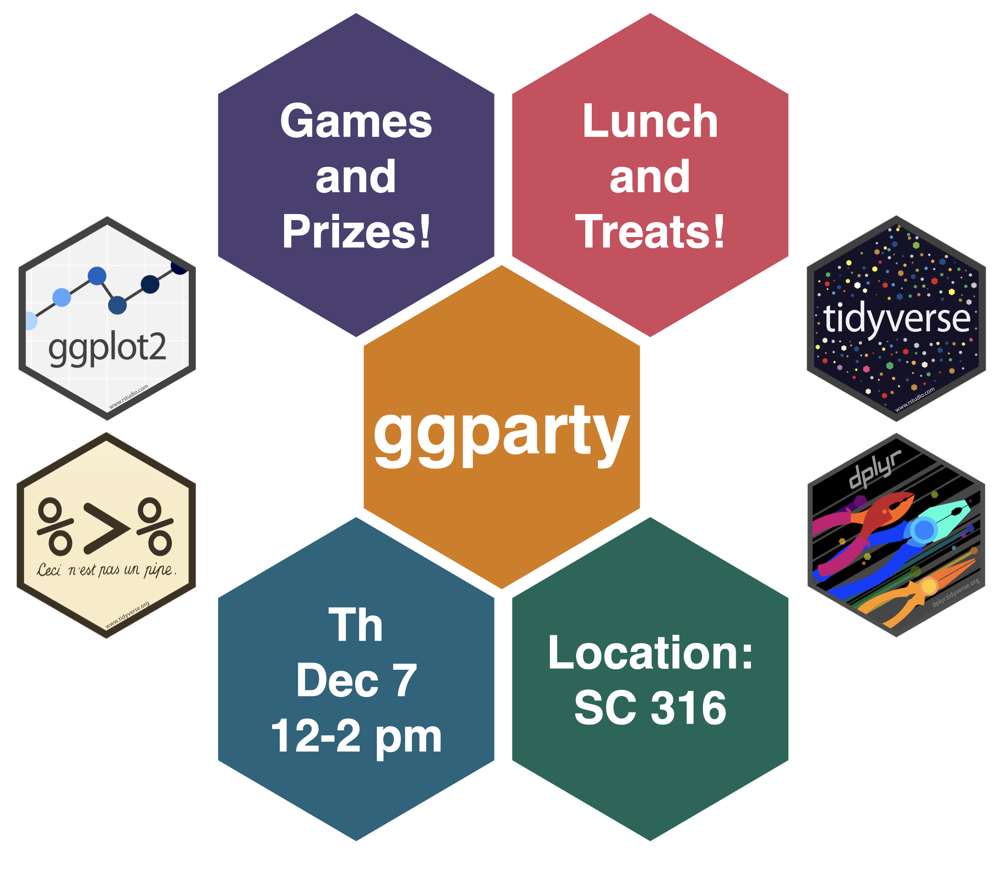
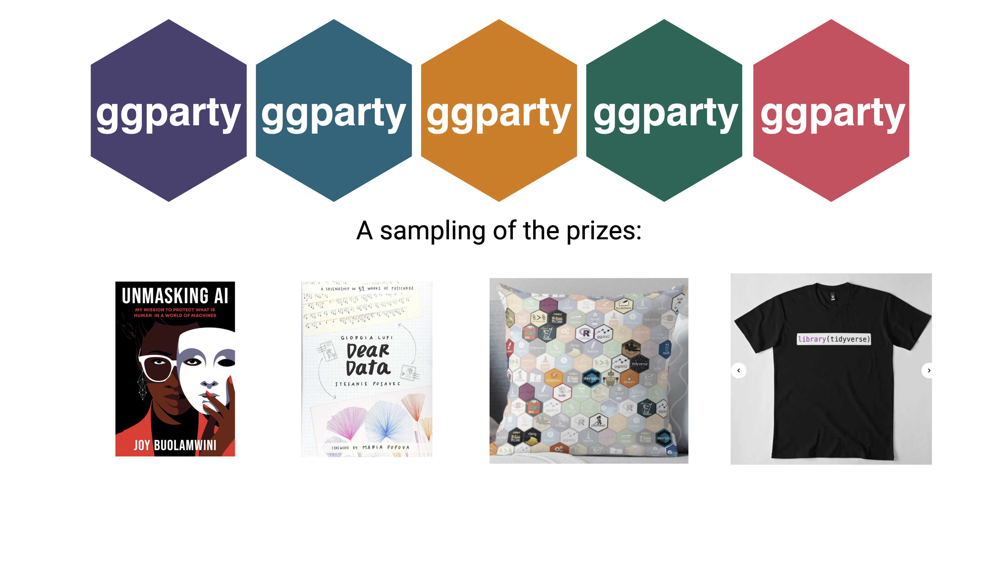
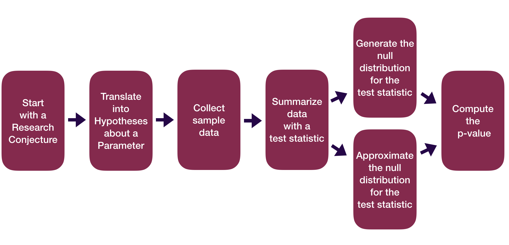
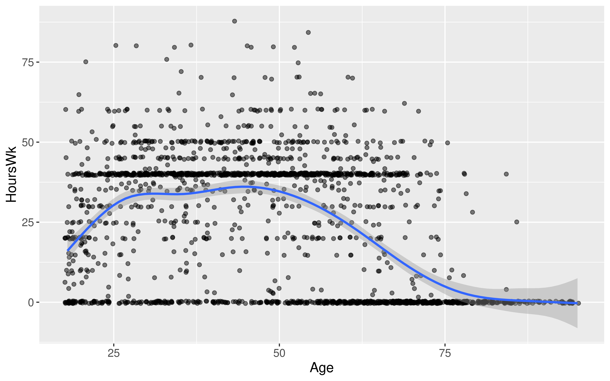
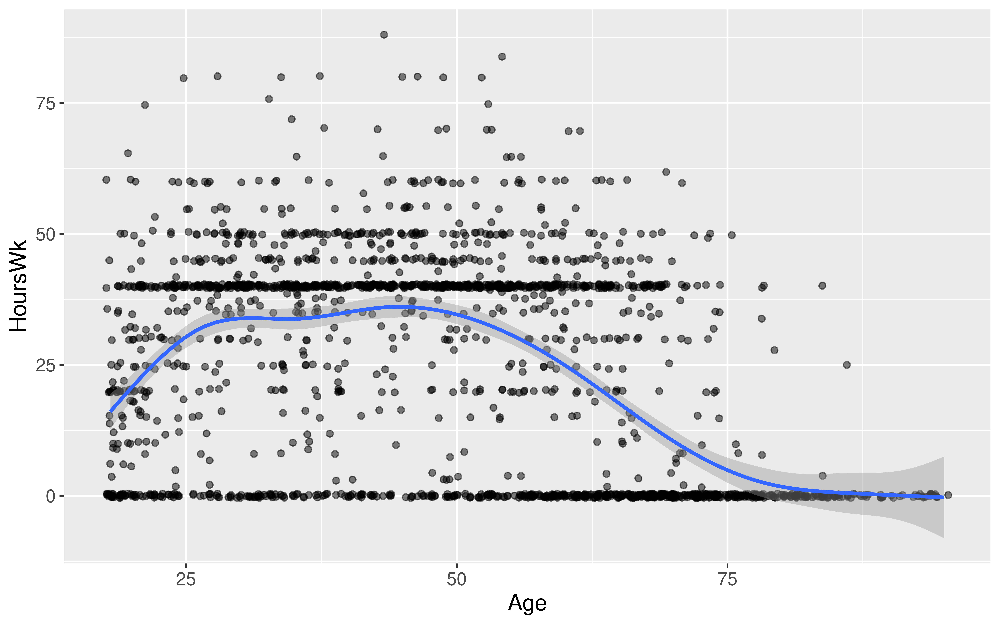

| Response | Explanatory | Numerical_Quantity | Parameter | Statistic |
|---|---|---|---|---|
| quantitative | - | mean | \(\mu\) | \(\bar{x}\) |
| categorical | - | proportion | \(p\) | \(\hat{p}\) |
| quantitative | categorical | difference in means | \(\mu_1 - \mu_2\) | \(\bar{x}_1 - \bar{x}_2\) |
| categorical | categorical | difference in proportions | \(p_1 - p_2\) | \(\hat{p}_1 - \hat{p}_2\) |
| quantitative | quantitative | correlation | \(\rho\) | \(r\) |

More Theory-Based Inference
Kelly McConville
Stat 100
Week 13 | Fall 2023
Announcements
- Regular OH schedule ends on Tues, Dec 5th (last day of classes).
- Will have lots of office hours during Reading Period but not at the standard times.
- Will update the OH spreadsheet once finalized.
Goals for Today
- Discuss more theory-based inference.
- Sample size calculations.
Please make sure to fill out the Stat 100 Course Evaluations.
We appreciate constructive feedback.
For all of your course evaluations be mindful of unconscious and unintentional biases.
üéâ You are all invited to the Stat 100 ggparty! üéâ
Question: What is a ggparty?
“
ggparty”: An end-of-semester party filled with Stat 100-themed games, prizes, and food!

If you are able to attend, please RSVP: bit.ly/ggpartyf23

If you are able to attend, please RSVP: bit.ly/ggpartyf23
Statistical Inference Zoom Out – Estimation

Statistical Inference Zoom Out – Testing

Recap:
Central Limit Theorem (CLT): For random samples and a large sample size \((n)\), the sampling distribution of many sample statistics is approximately normal.
Sample Proportion Version:
When \(n\) is large (at least 10 successes and 10 failures):
\[ \hat{p} \sim N \left(p, \sqrt{\frac{p(1-p)}{n}} \right) \]
Sample Mean Version:
When \(n\) is large (at least 30):
\[ \bar{x} \sim N \left(\mu, \frac{\sigma}{\sqrt{n}} \right) \]
There Are Several Versions of the CLT!
- Refer to these tables for:
- CLT’s “large sample” assumption
- Equation for the test statistic
- Equation for the confidence interval
Recap:
Z-score test statistics:
\[ \mbox{Z-score} = \frac{\mbox{statistic} - \mu}{\sigma} \]
Usually follows a standard normal or a t distribution.
Use the approximate distribution to find the p-value.
Recap:
Formula-Based P*100% Confidence Intervals
\[ \mbox{statistic} \pm z^* SE \]
where \(P(-z^* \leq Z \leq z^*) = P\)
Or we will see that sometimes we use a t critical value:
\[ \mbox{statistic} \pm t^* SE \]
where \(P(-t^* \leq t \leq t^*) = P\)
How do we perform probability model calculations in R?
Probability Calculations in R
Question: How do I compute probabilities in R?

pnorm(q = 1, mean = 0, sd = 1)[1] 0.8413447pt(q = 1, df = 52)[1] 0.8390293Doesn’t seem quite right…
Probability Calculations in R
Question: How do I compute probabilities in R?
pnorm(q = 1, mean = 0, sd = 1,
lower.tail = FALSE)[1] 0.1586553pt(q = 1, df = 52, lower.tail = FALSE)[1] 0.1609707P*100% CI for parameter:
\[ \mbox{statistic} \pm z^* SE \]
Question: How do I find the correct critical values \((z^* \mbox{ or } t^*)\) for the confidence interval?
qnorm(p = 0.975, mean = 0, sd = 1)[1] 1.959964qt(p = 0.975, df = 52)[1] 2.006647P*100% CI for parameter:
\[ \mbox{statistic} \pm z^* SE \]
Question: What percentile/quantile do I need for a 90% CI?
qnorm(p = 0.95, mean = 0, sd = 1)[1] 1.644854qt(p = 0.95, df = 52)[1] 1.674689Probability Calculations in R
To help you remember:
Want a Probability?
→ use pnorm(), pt(), …
Want a Quantile (i.e. percentile)?
→ use qnorm(), qt(), …
Probability Calculations in R
Question: When might I want to do probability calculations in R?
Computed a test statistic that is approximated by a named random variable. Want to compute the p-value with
p---()Compute a confidence interval. Want to find the critical value with
q---().To do a Sample Size Calculation.
Sample Size Calculations
Very important part of the data analysis process!
Happens BEFORE you collect data.
You determine how large your sample size needs for a desired precision in your CI.
- The power calculations from hypothesis testing relate to this idea.
Sample Size Calculations
Question: Why do we need sample size calculations?
Example: Let’s return to the dolphins for treating depression example.
With a sample size of 30 and 95% confidence, we estimate that the improvement rate for depression is between 14.5 percentage points and 75 percentage points higher if you swim with a dolphin instead of swimming without a dolphin.
With a width of 60.5 percentage points, this 95% CI is a wide/very imprecise interval.
Question: How could we make it narrower? How could we decrease the Margin of Error (ME)?
Sample Size Calculations – Single Proportion
Let’s focus on estimating a single proportion. Suppose we want to estimate the current proportion of Harvard undergraduates with COVID with 95% confidence and we want the margin of error on our interval to be less than or equal to 0.02. How large does our sample size need to be?
Want
\[ z^* \sqrt{\frac{\hat{p}(1 - \hat{p})}{n}} \leq B \]
Need to derive a formula that looks like
\[ n \geq \quad ... \]
Question: How can we isolate \(n\) to be on a side by itself?
Sample Size Calculations – Single Proportion
Let’s focus on estimating a single proportion. Suppose we want to estimate the current proportion of Harvard undergraduates with COVID with 95% confidence and we want the margin of error on our interval to be less than or equal to 0.02. How large does our sample size need to be?
Sample size calculation:
\[ n \geq \frac{\hat{p}(1 - \hat{p})z^{*2}}{B^2} \]
What do we plug in for, \(\hat{p}\), \(z^{*}\), \(B\)?
Consider sample size calculations when estimating a mean on this week’s p-set!
Let’s cover examples of theory-based inference for two variables.
Data Example
We have data on a random sub-sample of the 2010 American Community Survey. The American Community Survey is given every year to a random sample of US residents.
# Libraries
library(tidyverse)
library(Lock5Data)
# Data
data(ACS)
# Focus on adults
ACS_adults <- filter(ACS, Age >= 18)
glimpse(ACS_adults)Rows: 1,936
Columns: 9
$ Sex <int> 0, 1, 0, 0, 1, 1, 0, 0, 0, 0, 1, 0, 0, 0, 0, 0, 1, 1, …
$ Age <int> 38, 18, 21, 55, 51, 28, 46, 80, 62, 41, 37, 42, 69, 48…
$ Married <int> 1, 0, 0, 1, 0, 0, 0, 0, 1, 1, 0, 0, 0, 1, 1, 1, 0, 0, …
$ Income <dbl> 64.0, 0.0, 4.0, 34.0, 30.0, 13.7, 114.0, 0.0, 0.0, 0.0…
$ HoursWk <int> 40, 0, 20, 40, 40, 40, 60, 0, 0, 0, 40, 42, 0, 60, 0, …
$ Race <fct> white, black, white, other, black, white, white, white…
$ USCitizen <int> 1, 1, 1, 0, 1, 1, 1, 1, 1, 1, 1, 1, 1, 1, 1, 1, 1, 0, …
$ HealthInsurance <int> 1, 1, 1, 0, 1, 0, 1, 1, 1, 1, 0, 1, 1, 1, 1, 1, 1, 0, …
$ Language <int> 1, 1, 1, 0, 1, 0, 0, 0, 1, 1, 1, 1, 1, 1, 1, 1, 1, 0, …Difference in Proportions
Let’s try to determine if there’s a relationship between US citizenship and marriage status.
Response variable:
Explanatory variable:
Parameter of interest:
Sample size requirement for theory-based inference:
Difference in Proportions
Let’s try to determine if there’s a relationship between US citizenship and marriage status.
# Exploratory data analysis
ggplot(data = ACS_adults,
mapping = aes(x = factor(USCitizen),
fill = factor(Married))) +
geom_bar(position = "fill")# Sample size
ACS_adults %>%
count(Married, USCitizen) Married USCitizen n
1 0 0 64
2 0 1 832
3 1 0 79
4 1 1 961Difference in Proportions
Let’s try to determine if there’s a relationship between US citizenship and marriage status.
Why isprop_test() failing?
library(infer)
ACS_adults %>%
prop_test(Married ~ USCitizen,
order = c("1", "0"), z = TRUE,
success = "1")Error in `prop_test()`:
! The response variable of `Married` is not appropriate since the response variable is expected to be categorical.Difference in Proportions
Let’s try to determine if there’s a relationship between US citizenship and marriage status.
ACS_adults %>%
mutate(MarriedCat = case_when(Married == 0 ~ "No",
Married == 1 ~ "Yes"),
USCitizenCat = case_when(USCitizen == 0 ~ "Not citizen",
USCitizen == 1 ~ "Citizen")) %>%
prop_test(MarriedCat ~ USCitizenCat,
order = c("Citizen", "Not citizen"), z = TRUE,
success = "Yes")# A tibble: 1 × 5
statistic p_value alternative lower_ci upper_ci
<dbl> <dbl> <chr> <dbl> <dbl>
1 -0.380 0.704 two.sided -0.101 0.0682Difference in Means
Let’s estimate the average hours worked per week between married and unmarried US residents.
Response variable:
Explanatory variable:
Parameter of interest:
Sample size requirement for theory-based inference:
Difference in Means
Let’s estimate the average hours worked per week between married and unmarried US residents.
# Exploratory data analysis
ggplot(data = ACS_adults, mapping = aes(x = HoursWk)) +
geom_histogram() +
facet_wrap(~Married, ncol = 1)# Sample size
ACS_adults %>%
drop_na(HoursWk) %>%
count(Married) Married n
1 0 896
2 1 1040Difference in Means
Let’s estimate the average hours worked per week between married and unmarried US residents.
Which arguments for t_test() reflect my research question?
library(infer)
ACS_adults %>%
t_test(HoursWk ~ Married, order = c("1", "0"))# A tibble: 1 × 7
statistic t_df p_value alternative estimate lower_ci upper_ci
<dbl> <dbl> <dbl> <chr> <dbl> <dbl> <dbl>
1 4.81 1902. 0.00000160 two.sided 4.55 2.69 6.40library(infer)
ACS_adults %>%
t_test(HoursWk ~ Married, order = c("1", "0"),
alternative = "greater")# A tibble: 1 × 7
statistic t_df p_value alternative estimate lower_ci upper_ci
<dbl> <dbl> <dbl> <chr> <dbl> <dbl> <dbl>
1 4.81 1902. 0.000000800 greater 4.55 2.99 InfCorrelation
We want to determine if age and hours worked per week have a positive linear relationship.
Response variable:
Explanatory variable:
Parameter of interest:
Sample size requirement for theory-based inference:
Correlation
We want to determine if age and hours worked per week have a positive linear relationship.
# Exploratory data analysis
ggplot(data = ACS_adults,
mapping = aes(x = Age,
y = HoursWk)) +
geom_jitter(alpha = 0.5) +
geom_smooth()
Correlation
We want to determine if age and hours worked per week have a positive linear relationship.
cor.test(~ HoursWk + Age, data = ACS_adults, alternative = "greater")
Pearson's product-moment correlation
data: HoursWk and Age
t = -17.007, df = 1934, p-value = 1
alternative hypothesis: true correlation is greater than 0
95 percent confidence interval:
-0.3927809 1.0000000
sample estimates:
cor
-0.360684 Correlation
We want to determine if age and hours worked per week have a positive linear relationship.
# Exploratory data analysis
ggplot(data = ACS_adults,
mapping = aes(x = Age,
y = HoursWk)) +
geom_jitter(alpha = 0.5) +
geom_smooth()
Have Learned Two Routes to Statistical Inference
Which is better?
Is Simulation-Based Inference or Theory-Based Inference better?
Depends on how you define better.
- If better = Leads to better understanding:
→ Research tends to show students have a better understanding of p-values and confidence from learning simulation-based methods.
- If better = More flexible/robust to assumptions:
→ The simulation-based methods tend to be more flexible but that generally requires learning extensions beyond what we’ve seen in Stat 100.
- If better = More commonly used:
→ Definitely the theory-based methods but the simulation-based methods are becoming more common.
- Good to be comfortable with both as you will find both approaches used in journal and news articles!
What does statistical inference (estimation and hypothesis testing) look like when I have more than 0 or 1 explanatory variables?
Reminders:
- If you are able to attend the
ggparty, RSVP: bit.ly/ggpartyf23 - Regular OH schedule ends on Tues, Dec 5th (last day of classes).
- Will have lots of office hours during Reading Period but not at the standard times.
- Will update the OH spreadsheet once finalized.